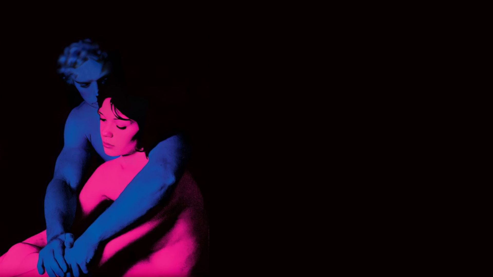

Melanie Martinez

Melanie Adele Martinez, mais conhecida como Melanie Martinez, é uma cantora, compositora, diretora e atriz estadunidense. Melanie se tornou conhecida por suas canções com letras polêmicas e por seu estilo e cabelo de duas cores. Suas letras combinam um lado obscuro com seu jeito super meigo. Com 3 albúns, 3 deluxes e 15 Singles, seu sucesso mais recente é o seu albúm "PORTALS", lançado em 2023.
Portals (estilizado em letras maiúsculas) é o terceiro álbum de estúdio da cantora e compositora americana Melanie Martinez. Foi lançado em 31 de março de 2023, pela Atlantic Records. Foi precedido por dois singles, "Death", em 17 de março de 2023, e "Void", em 29 de março de 2023. Uma edição deluxe foi lançada em 5 de abril de 2023, incluindo três novas faixas. Nos Estados Unidos, Portals estreou na segunda posição da Billboard 200, vendendo um equivalente a 142.000 unidades em sua primeira semana, tornando-se a maior venda de estreia de uma solista feminina em 2023. Se tornou seu terceiro álbum a alcançar o top 10 da tabela, configurando-se como a posição mais alta alcançada em sua carreira. Ouça agora:

Acesse o album aqui
TV Girl

TV Girl é uma banda estadunidense de indie pop de San Diego, Califórnia, formada por Brad Petering, Jason Wyman e Wyatt Harmon. O grupo agora possui base em Los Angeles. A mixtape de 2012 da TV Girl, The Wild, The Innocent, The TV Shuffle, foi lançada e distribuída gratuitamente com um livro para colorir por download. Embora não tenham atingido o mainstream da crítica, TV Girl acumulou um status cult,[4] e seu álbum de estreia, French Exit, é considerado um marco na cena da música indie, sendo chamado de "notavelmente sólido" pela Bandwagon Magazine[5] e "um dos álbuns indie-pop mais focados da última década" pelo The Daily Targum.
Death of a Party Girl é o terceiro álbum de estúdio da banda indie pop americana TV Girl, lançado em 8 de maio de 2018. A terceira faixa do álbum, “ Blue Hair ”, se tornou viral no TikTok por volta de 2023. O álbum contem ao todo 10 músicas. Ouça agora:

Acesse o album aqui